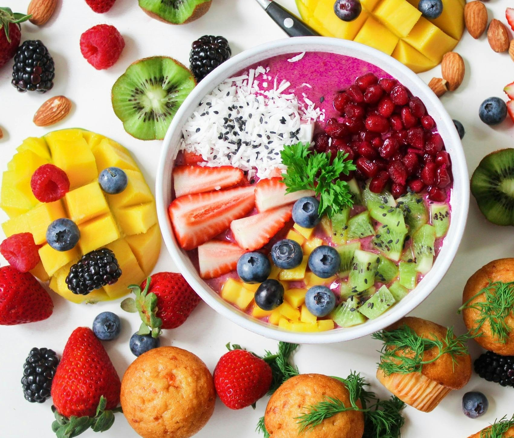
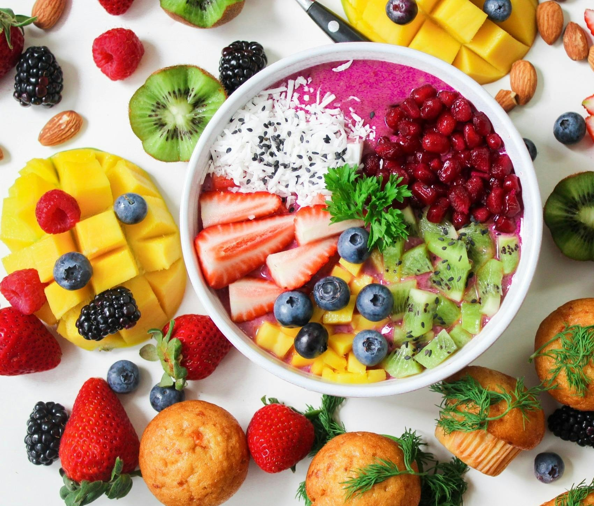

Why is Nutrition Important?
Nutrition is one of the most vital parts of sustaining a long and healthy life. We also derive most of our nutrients and vitamins from the food that we consume.
It can be incredibly hard to lead a healthy lifestye in the technical workforce. Most of us will go on to work jobs where we're sitting for hours on end, with little-to-no regard for our physical wellbeing. Let alone considering our nutrition, and the overwhelming effects it can have on our lives.
We can all very easily take small steps to improving this, however. And even as daunting the idea of meal prepping, or considering what we purchase and put in our bodies, can be. It trully isn't so bad once we start.
Below I will be giving a few tips, tricks, and examples that we can all implement in order to live this healthier lifestyle.
The Nutrients and Vitamins we derive from our diet:
- Help us to fight off illness and disease
- Supply us with energy
- Sustain our Body and Mind
What steps can you take to improve your nutrition?
There are tonnes of small changes that you can implement into your daily life that can greatly improve your nutrition. In no order, a few of these are as simple as:
- Drinking more water
- Simple substitutes such as avocado oil instead of butter
- Eating healthier whole foods, and home meals instead of takeout
- Substituting snacks with higher volume meals, consisting of more protein dense as well as green foods
Added benefits of food substitutions.
Becoming more food consious, and being much more aware of the decisions we make on a daily basis in regards to how to fuel ourselves, will come with the added benefit of less calories being consumed on average as well. Pairing this with other healthy habits such as going for walks to achieve a step count goal, will in most cases cause us to achieve healthier weights as well. Attaining and maintaining these healthier weights come with a whole slough of benefits themselves, such as lower risk of heart failure and other cholestorol related illnesses. Though we won't dive too deep into that topic on this page. If you're interested, you should check out our page on exercise!
Some easy substitutions that can be made immediately are provided below:
| Traditional Food Item | Total Fat | Saturated Fat | Trans Fat | Calories | Substitute Food Item | Total Fat | Saturated Fat | Trans Fat | Calories |
|---|---|---|---|---|---|---|---|---|---|
| Dairyland Salted Butter (10g) | 8g | 5g | 0.2g | 70cal | Becel Buttery Taste Margarine (10g) | 8g | 1g | 0g | 70cal |
| Maple Leaf Bacon (50g) | 20g | 7g | 0g | 200cal | Butterball Turkey Bacon (50g) | 10g | 4g | 0g | 116cal |
| Hellmann's Mayonnaise (1tbsp) | 11g | 1g | 0g | 100cal | Hellmann's Light Mayonnaise (1tbsp) | 3.5g | 0.3g | 0g | 35cal |
| Kraft BBQ Sauce (2tbsp) | 0.5g | 0g | 0g | 40cal | Kraft Light BBQ Sauce (2tbsp) | 0g | 0g | 0g | 20cal |
Before you go.... Check out one of these videos on healthy and affordable meal prepping!
Video credited to: Will Tennyson, Joey Suggs, Bobby Parrish